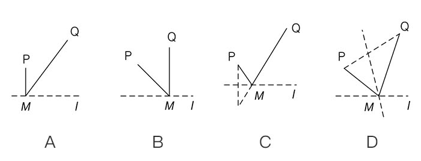

<ion-view view-title="错题详情" class="bgwhite">
  <ion-content class="padding">
    <div class="content detail">
      <div class="list data">
        <p>如图直线是一条河，P,Q是两个村庄，计划在上的某处修建一个水泵站M，向P、Q两地供水。现有如下四种铺设方案（图中实线表示铺设的管道），则所需管道最短的是（）。</p>
        <center></center>
        <p class="collection"> <a class="tags" href="">错题</a></p>
        <p>您的答案：A</p>
        <p>正确答案：<span class="rightAnswer">C</span></p>
        <p>题目解析：</p>
        <div class="tmjx">
          <p>本题主要考查轴对称的应用。</p>
          <p>如图所示，设点P关于直线L的对称点为A点，根据轴对称的性质可知，PM=AM,则PM=MQ=AM=MQ,根据两点之间线段最短可知，M位于AQ与L,的交点时PM+MQ最小。</p>
          <p>故本题正确答案为C。</p>
        </div>
      </div>
    </div>
  </ion-content>
</ion-view>
